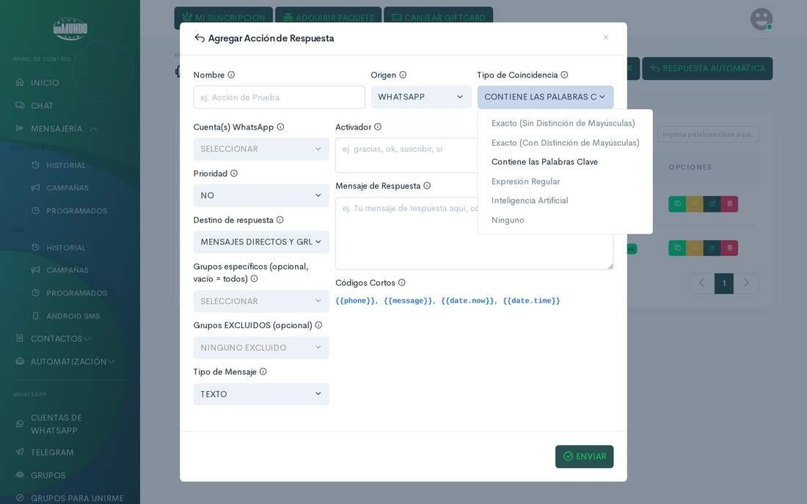
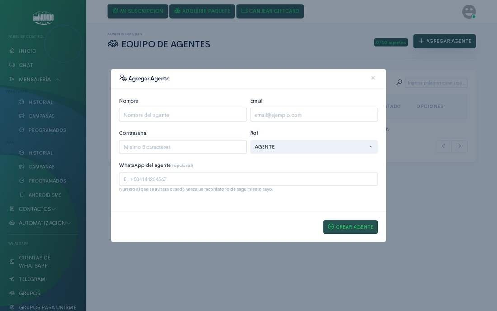

Plataforma multi-inquilino de mensajería para negocios de habla hispana. Programa envíos a cientos de grupos y contactos, reparte las conversaciones entre tu equipo y deja que la IA conteste lo repetitivo.
A multi-tenant messaging platform for Spanish-speaking businesses. Schedule sends to hundreds of groups and contacts, share conversations across your team and let AI answer the repetitive questions.
Cifras reales leídas de la base de datos de producción el 27-oct-2026. Envíos contados desde noviembre de 2025.
Real figures read from the production database on 27-Oct-2026. Sends counted since November 2025.
Por días y horarios, con escalonamiento entre destinos y reparto entre líneas.
By day and time, with staggering between recipients and load sharing across lines.
Etiquetas, notas internas, respuestas rápidas y reparto de conversaciones entre el equipo.
Labels, internal notes, quick replies and conversations shared across the team.
Respuestas por palabra clave, expresión regular o IA, y flujos visuales de varios pasos.
Replies by keyword, regular expression or AI, and visual multi-step flows.
Una app convierte un teléfono en pasarela: elige la SIM y sigue enviando con la pantalla apagada.
An app turns a phone into a gateway: pick the SIM and it keeps sending with the screen off.
Varias líneas por cliente, gestionadas desde un único panel y una sola bandeja.
Several lines per customer, managed from one dashboard and one inbox.
El sistema del cliente envía y recibe, y las empresas de hosting avisan de facturas y tickets.
The customer's system sends and receives, and hosting companies notify invoices and tickets.


El panel no tiene estado; las sesiones, que deben vivir de forma continua, las mantiene un servicio aparte en Go.
The dashboard is stateless; sessions, which must stay alive continuously, are kept by a separate service written in Go.
| Sesiones | Sessions | Se recuperan solas al arrancar, y revincular crea una sesión nueva sin cortar la que funciona.They recover on their own at startup, and re-linking creates a new session without cutting the working one. |
| Reinicios | Restarts | Una instancia que se apaga devuelve a la cola lo que no empezó: ningún envío se pierde.An instance shutting down returns unstarted work to the queue: no send is lost. |
| Seguridad | Security | Protección CSRF, API por clave, puente de soporte firmado con HMAC y caché cifrada en la app.CSRF protection, key-based API, HMAC-signed support bridge and an encrypted cache in the app. |
| Calidad | Quality | Pruebas automáticas del servicio de mensajería: identidad, eventos, notas de voz, cola y revinculación.Automated tests for the messaging service: identity, events, voice notes, queue and re-linking. |
| PHP | Panel web, API, automatizaciones, IA y facturación (75.000 líneas), y el módulo de hosting (11.800).Web dashboard, API, automation, AI and billing (75,000 lines), and the hosting module (11,800). |
| HTML · CSS · JavaScript | Plantillas e interfaz del panel y del sitio público (42.000 líneas).Templates and interface for the dashboard and public site (42,000 lines). |
| Go | El servicio de mensajería, con sus pruebas (12.000 líneas).The messaging service, with its tests (12,000 lines). |
| Dart · Kotlin | Las dos apps móviles (14.900 líneas) y el servicio nativo de la pasarela SMS (1.000).The two mobile apps (14,900 lines) and the native SMS gateway service (1,000). |
| SQL | La base de datos, con aislamiento por inquilino.The database, with per-tenant isolation. |